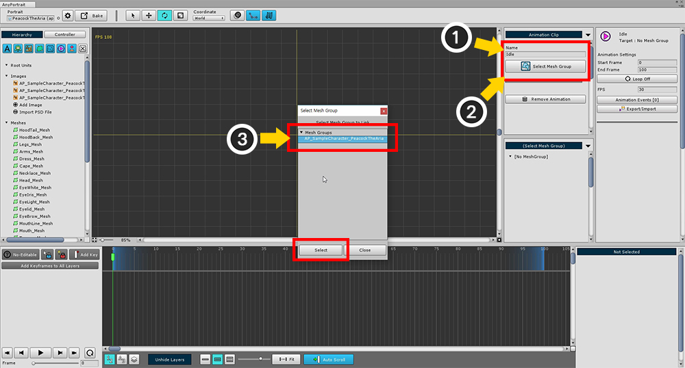
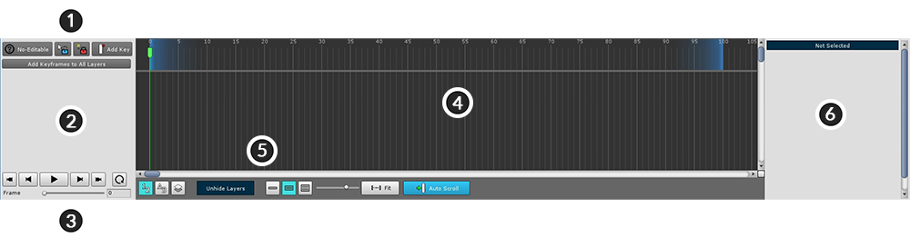
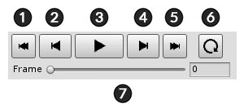
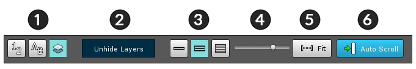

AnyPortrait > 시작하기 > 2.6. 애니메이션 클립 생성하기
2.6. 애니메이션 클립 생성하기
1.0.0

애니메이션과 연동될 모디파이어를 추가합니다.
Transform (Animation) 모디파이어와 Morph (Animation) 모디파이어가 애니메이션을 위한 모디파이어입니다.
여기서는 본 애니메이션을 위해 Transform (Animation) 모디파이어를 선택해서 추가합니다.

애니메이션 클립을 추가합니다.
Add Animation Clip 버튼을 눌러서 애니메이션 클립을 생성한 뒤 선택합니다.

(1) 애니메이션 클립의 이름을 지정합니다. 여기서는 "Idle"로 정했습니다.
(2) Set Mesh Group 버튼을 눌러서 (3) 작업했던 메시 그룹을 선택합니다.
주의 : 애니메이션 이름은 게임 중에 애니메이션을 재생할 때 사용됩니다.
이름이 중복되거나 잘못 입력되면 재생이 되지 않습니다.

메시 그룹과 연결된 애니메이션 클립 작업 화면입니다.
이 화면에서 애니메이션을 만들게 됩니다.

애니메이션 클립 설정 UI입니다.
1. 애니메이션 클립의 이름과 연결된 메시 그룹 이름
2. 애니메이션 클립의 시작, 끝 프레임
3. 반복 재생(Loop) 여부
4. 초당 프레임 수(FPS)
5. 애니메이션 이벤트
6. 애니메이션을 파일로 내보내기/가져오기

키프레임 애니메이션이 등록되는 타임라인 UI입니다.
이곳에 타임라인(Timeline)이라는 데이터를 추가하여 애니메이션을 구성합니다.
1. 편집 모드 관련 UI : 편집 모드를 On/Off하거나 키프레임을 추가, 또는 잠금 버튼이 있습니다.
2. 타임라인 헤더 영역 : 등록된 타임라인(Timeline)과 타임라인 레이어(Timeline Layer)의 이름이 나타나는 곳입니다.
3. 애니메이션 재생 제어 UI : 애니메이션을 재생하거나 정지, 또는 프레임 이동을 하는 등의 제어를 하는 UI입니다.
4. 메인 작업 영역 : 타임라인과 키프레임이 나타나는 곳입니다. (좌우 스크롤 : 마우스 휠클릭 , 상하 스크롤 : 마우스 휠 )
5. 보기 설정 UI : 타임라인 UI에 관한 보기 설정에 관한 기능을 포함합니다.
6. 상세 정보 영역 : 선택한 타임라인, 타임라인 레이어, 키프레임의 정보와 기능들이 나타납니다.

애니메이션 편집 UI입니다.
1. 애니메이션 편집 시작/종료 (단축키 : A )
2. Selection Lock On/Off (단축키 : S )
3. Modifier Lock On/Off (단축키 : D )
4. 현재 위치에 키프레임 생성 (단축키 : F )
5. 현재 위치의 모든 레이어에 키프레임 생성

애니메이션 재생 제어 UI입니다.
1. 첫 프레임으로 이동 (단축키 : Shift + < )
2. 이전 프레임으로 이동 (단축키 : < )
3. 재생 / 중지 (단축키 : Space Bar )
4. 다음 프레임으로 이동 (단축키 : > )
5. 마지막 프레임으로 이동 (단축키 : Shift + > )
6. 반복 재생(Loop) 여부
7. 현재 재생 중인 프레임

타임라인 UI에 대한 보기 설정 UI입니다.
1. 타임라인 레이어 정렬 방식 : 타임라인 레이어를 어떤 순서로 보여줄지를 결정합니다. (등록 순서, 이름 순서, 렌더링 순서)
2. Unhide Layers : 만약 숨겨진(Hide) 타임라인 레이어가 있다면 이 버튼을 눌러서 나타나게 할 수 있습니다.
3. 타임라인 UI 크기 : 전체 에디터 영역에서 하단의 타임라인 UI의 크기를 조절합니다.
4. 메인 작업 영역 확대 비율 : 키프레임이 표시되는 메인 작업 영역의 확대/축소 비율입니다.
5. Fit : 메인 작업 영역의 확대/축소 비율을 전체 재생 범위가 화면에 맞도록 자동으로 조절합니다.
6. Auto Scroll : 이 기능이 켜져있다면 재생 중일때의 프레임에 맞추어서 스크롤이 자동으로 이동합니다.